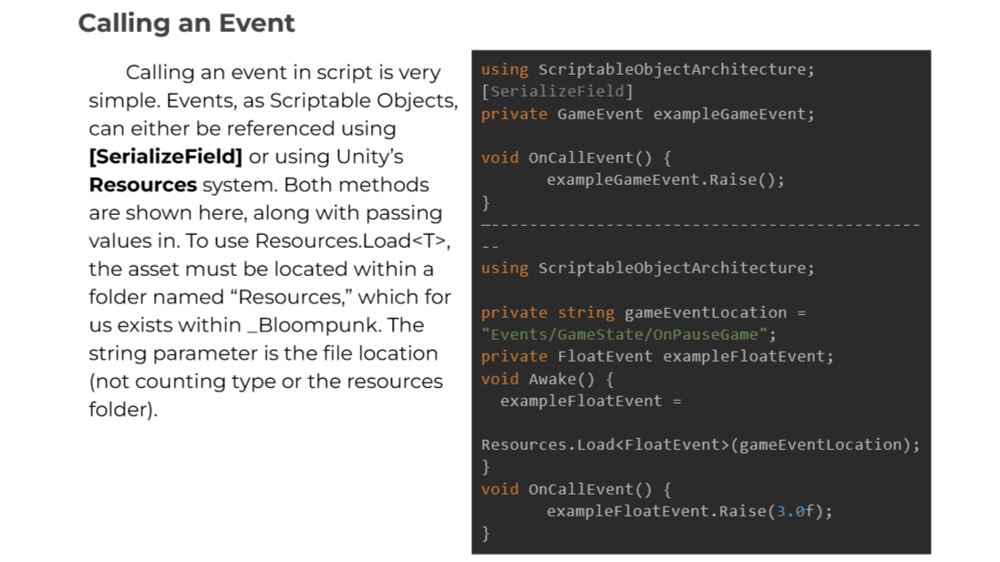

About
Bloompunk is a resource-management FPS roguelike with a core theme of growth.
It takes place in a world of plants and steampunk, where your weapons & abilities are alive and must be fed.
It was made in Unity as part of the USC Advanced Games Project capstone course from September 2022 to May 2023.
I worked as the lead engineer in charge of a team of 5 others. In addition to team leadership, I was responsible for user interface and game flow implementation.

Documentation I wrote for an external library
Leadership
- Conducted code reviews & was responsible for general codebase quality and cohesion
- Helped other engineers debug errors & solve issues
- Wrote documentation and technical planning documents
- Handled build pipelines and other deliverables
- Communicated engineering capabilities and needs to other disciplines
- Managed engineering scope and task distribution
Engineering
- Created drag-and-drop upgrade screen with serialized history data
- Wrote Scriptable-Object based state machine template for use with player and enemies
- Implemented custom object pooling system, saving 5ms processing time and 600k of memory allocation each frame
- Handled UI functionality ranging from pause and settings menus to HUD to victory and death screens
- Managed persistent data tracking for game progress and settings preferences

The upgrade screen in action